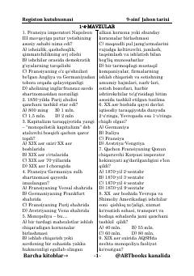

UT9-sinf o‘quvchilari uchun jahon tarixidan testlar to‘plami.
Ushbu qo‘llanma 9-sinf o‘quvchilari uchun jahon tarixi fanidan test savollari va topshiriqlarni o‘z ichiga oladi. Materialda XIX asr oxiri va XX asr boshlaridagi tarixiy jarayonlar, monopoliyalar va davlatlar taraqqiyotiga oid testlar keltirilgan.